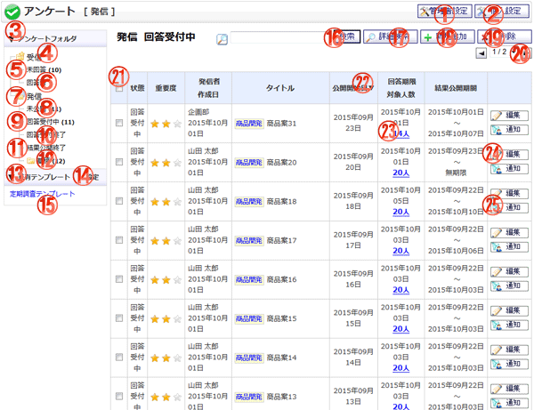

アンケート[発信](公開中)画面です。

機能説明
管理者設定管理者設定画面へ遷移します。管理者のみ利用可能です。 |
個人設定個人設定画面へ遷移します。 |
|---|---|
アンケートフォルダ詳細切り替えクリックすると、アンケートフォルダの詳細が開閉します。 |
発信フォルダ発信したアンケートの一覧を表示します。 |
発信フォルダ 未回答発信したアンケートの中で、未回答アンケートの一覧を表示します。括弧内の数字は、未回答のアンケート数です。ただし回答期限が過ぎたアンケートは含まれていません。 |
発信フォルダ 回答済発信したアンケートの中で、回答済アンケートの一覧を表示します。 |
発信フォルダ発信したアンケートの一覧を表示します。 |
発信フォルダ 未公開発信したアンケートの中で、未公開アンケートの一覧を表示します。括弧内の数字は、未公開アンケート数です。 |
発信フォルダ 公開発信したアンケートの中で、公開中のアンケート一覧を表示します。括弧内の数字は、現在公開中のアンケート数です。 |
発信フォルダ 回答完了発信したアンケートの中で、回答期限が過ぎて、かつ公開期間内のアンケート一覧を表示します。 |
発信フォルダ 公開完了発信したアンケートの中で、公開期間が過ぎたアンケートの一覧を表示します。 |
草稿フォルダ草稿に保存しているアンケートの一覧を表示します。括弧内の数字は、現在草稿保存しているアンケート数です。 |
共有テンプレート詳細切り替えクリックすると、共有テンプレートの一覧が開閉します。管理者またはアンケート発信対象者のみ利用可能です。 |
共有テンプレート 設定ボタン共有テンプレートの一覧画面へ遷移します。管理者またはアンケート発信対象者のみ利用可能です。 |
共有テンプレート 一覧共有テンプレートの一覧を表示します。タイトルが長い場合は省略して表示します。マウスカーソルをタイトルに合わせると、該当テンプレートの種類名とタイトルの全文が表示されます。管理者またはアンケート発信対象者のみ利用可能です。 |
検索ボタン入力されたキーワードを元に、詳細検索画面へ遷移します。 |
詳細検索ボタンクリックすると、詳細検索入力欄を表示します。もう一度クリックすると、入力欄を閉じます。 |
新規追加ボタンアンケートを新規で発信します。アンケート作成画面へ遷移します。 |
削除ボタン選択した発信アンケートを削除します。発信アンケート削除確認画面へ遷移します。発信アンケートを削除すると、回答データも一緒に削除されます。 |
ページコンボ 前頁・次頁ページコンボで任意のページへ、前頁アイコンクリックで前のページへ、次頁アイコンクリックで次のページへそれぞれ遷移します。 |
ヘッダチェックボックスチェックをつけると、１ページ分の全てのチェックボックスにチェックが付きます。チェックを外すと、１ページ分の全てのチェックボックスのチェックが外れます。 |
ヘッダタイトルクリックによって一覧のソート条件の切り替えを行います。現在ソート条件になっている項目をもう１度クリックすると「昇順」「降順」が切り替わります。 |
結果確認リンク（対象人数）対象人数をクリックすると、結果確認画面へ遷移します。 |
発信アンケート編集ボタン発信アンケートを編集します。編集したアンケートを再度発信した場合、回答情報は全て削除されます。 |
ショートメール通知ボタン公開中アンケートの場合のみ、未回答ユーザーに対してショートメールを通知することができます。また、アンケートの受信者全員に通知することもできます。 |
表示・入力項目説明
キーワード
検索するキーワードを入力します。